Sudoku, beautifully done.
Ninefold is a Sudoku app for Android with 97,000 puzzles built in, six puzzle types and a hint that teaches you how to solve, not just what to write. Play the daily challenge, uncover the month's picture, or race the computer or a friend.
It is free, with no adverts and nothing to unlock. There is no account and nothing about you leaves your phone.
Download for AndroidHow to install
- Version 1.0.0
- Android 8 or later
- 24.0 MB
Free, with nothing to unlock. No adverts, no account, no tracking. Compare or read the release notes.
Chrome may say the file might be harmful. It shows this for app files that do not come from Google Play. Choose Download anyway.
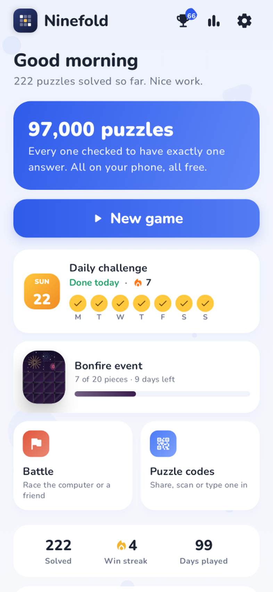
- No advertsNone in the app and none on this site.
- 97,000 puzzlesAll built in. Play anywhere, offline.
- Nothing to unlockEvery type, level and feature is free.
- PrivateNo account, no tracking, nothing sent.
A look inside
These are the real screens, drawn from the app's own code, some with made-up games and history. Swipe or scroll sideways to see them all.
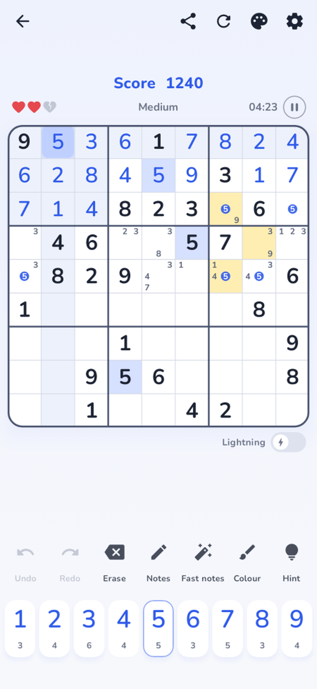
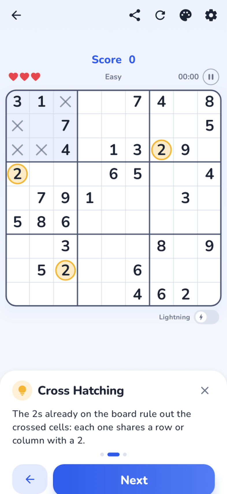
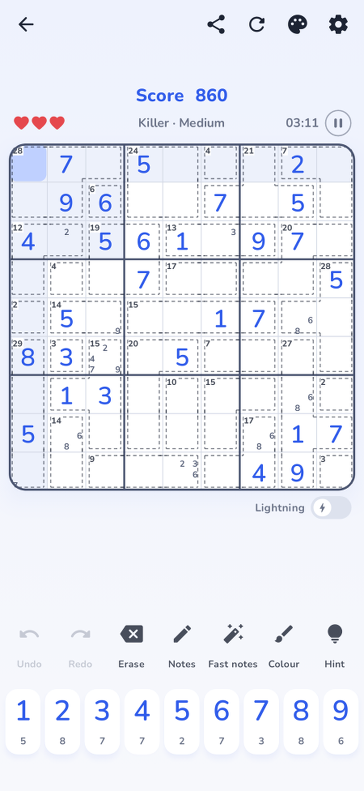
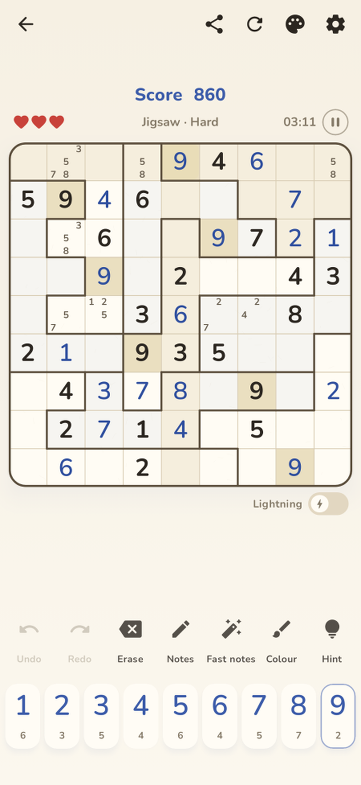
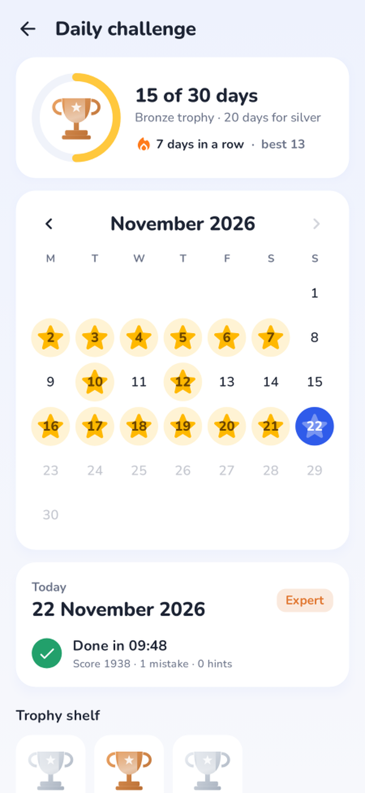
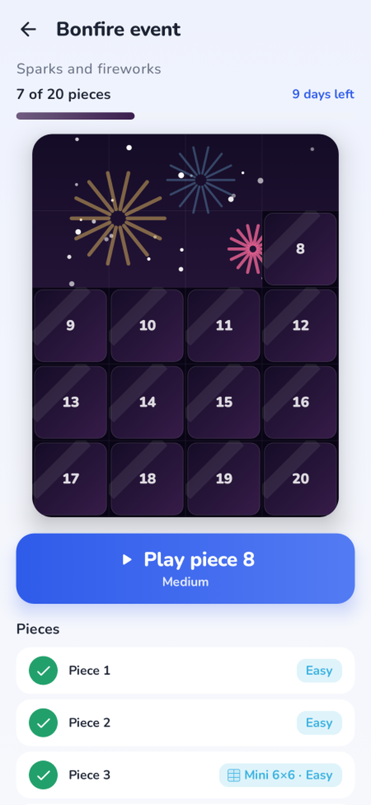
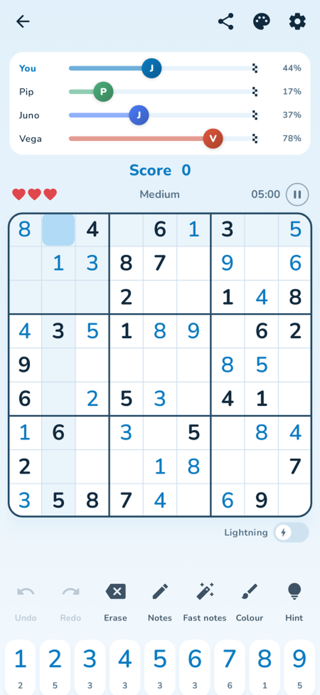
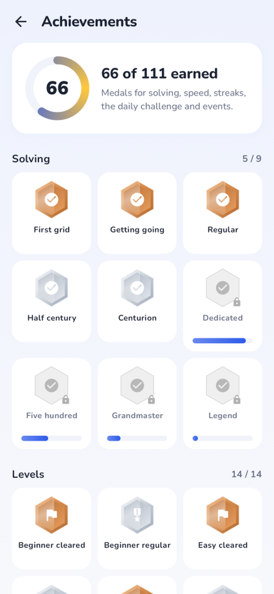
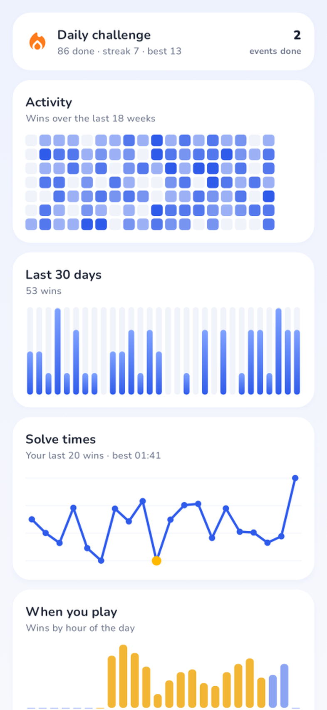
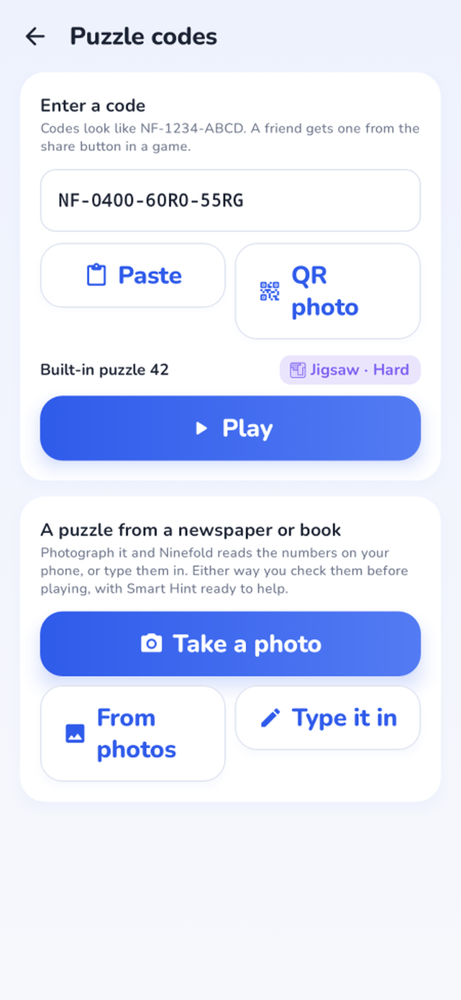
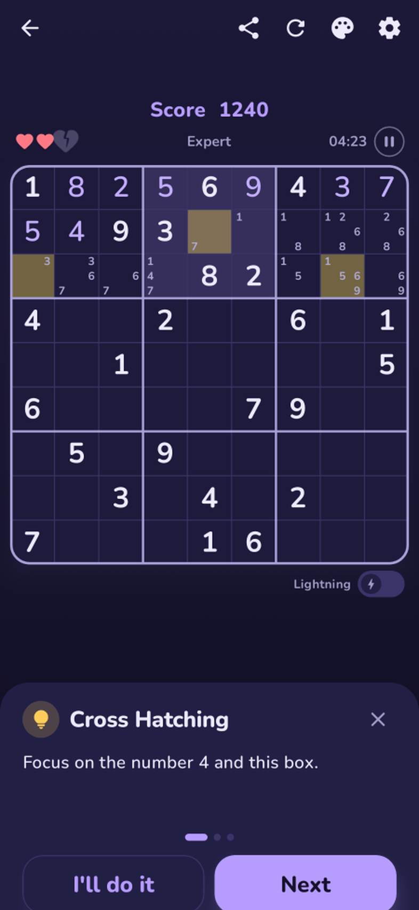
Better at Sudoku, one puzzle at a time
Ninefold is made for enjoying Sudoku and for getting better at it, without pressure.
Pick a puzzle
Choose a type and a level, or play today's challenge. A new game starts in a second, with no waiting and no adverts.
Get unstuck properly
Smart Hint names the technique you need and walks you through it, so next time you can spot it yourself.
Keep it fresh
Monthly events, trophies, achievements and races give you a reason to come back, at your own pace.
Everything is in, and all of it is free
Nothing below is held back for a paid tier, because there is no paid tier.
Puzzles
- 97,000 puzzles built in
- 70,000 classic puzzles across seven levels from Beginner to Master, and 27,000 more of the other types. All on the phone, none downloaded.
- Each checked twice
- Two separate solvers agree on exactly one answer for every puzzle, and the logic solver can finish each one, so a hint always has a next step.
- Six puzzle types
- Classic, Mini 6×6, Diagonal, Jigsaw, Killer and a giant 16×16.
Learning
- A hint that teaches
- Smart Hint names the technique and walks through it a page at a time, highlighting the cells that matter and leaving the answer to the last page.
- Why is this wrong?
- Tap after a mistake and Ninefold shows the clash, or how the number breaks the puzzle further on.
- Seventeen strategies
- From Full House to Jellyfish, each with a worked example and practice puzzles that really use it.
Every day
- Daily challenge
- One puzzle a day, the same on every phone, gentler early in the week and harder at the weekend. Monthly trophies in bronze, silver and gold.
- Monthly events
- A new picture every month. Twenty pieces of mixed puzzles, each win uncovering a tile.
- Widget and reminder
- Today's challenge and your streak on the home screen, and a daily nudge if you want one.
Playing together
- Race the computer
- Pip, Juno and Vega really solve the same puzzle move by move, slowing down on the hard parts as you do.
- Race a friend
- Two phones on the same wifi play the same puzzle and watch each other's progress. The phones talk only to each other.
- Puzzle codes and QR
- Send any puzzle to a friend as a short code or a QR code.
Your own puzzles
- Photograph a newspaper puzzle
- Ninefold finds the grid in the photo, flattens it and reads the numbers on the phone. You check them, then play with hints.
- Or type one in
- Ninefold checks it has exactly one answer and tells you how hard it is.
Made to enjoy
- Twelve themes
- Light, dark, paper, ocean, midnight and more, with handwritten notes and a paper texture if you like.
- Rules your way
- 3 lives, no limit, or Purist with no checking at all. Unlimited hints, or a cap you choose.
- Stats and achievements
- Detailed statistics with charts, 111 achievements, analysis of every win and a replay of how you solved it.
- Backup in one file
- Everything in one file you save or send through the share menu, and restore on a new phone.
Just you and the puzzle
Offline by design
Every puzzle is in the app. It only goes online when you tap Check for updates.
No account, no servers
There is nothing to sign up to and nowhere your games are sent. Races with a friend go straight between the two phones.
No ads, no tracking
There is no advertising, analytics or tracking, in the app or on this site. Photos of puzzles are read on the phone.
Installing and updating
Ninefold is not on Google Play, so your phone asks a couple of extra questions the first time.
Download the app file
Tap Download on your phone. The file is called Ninefold.apk and is about 24.0 MB. If Chrome says the file might be harmful, choose Download anyway.
Allow the install
Open the file. The first time, Android asks you to allow your browser to install apps. Allow it, go back and tap Install. If Google Play Protect steps in, choose More details, then Install anyway.
Updating later
In Settings, tap Check for updates. Ninefold downloads the new version and Android installs it over the old one, keeping everything.
Version 1.0.0, released 22 November 2026. See the release notes, or check your download.
Questions
Is Ninefold really free?
Yes. There is no paid version, no subscription, no trial and no adverts, and nothing is locked. Every puzzle, type and feature is in the free app.
Is it on Google Play?
No. Ninefold is a personal project and is downloaded from this site as an Android app file. It needs Android 8 or later.
Does it need the internet?
No. Every puzzle is built in and the game works with no connection at all. The app goes online only when you tap Check for updates. A race with a friend uses your wifi to talk to their phone and nothing else.
What does it know about me?
Nothing leaves your phone. There is no account, no analytics and no advertising. Your games, stats and settings are kept in the app's private storage.
How does scanning a newspaper puzzle work?
You take a photo or pick one. Ninefold finds the grid, straightens it and reads the numbers with a text-reading model that is built into the app, so the photo is never uploaded. You check the numbers before you play.
How do two phones race?
Both phones need Ninefold and the same wifi. One taps Host, the other taps Join and picks the game from the list, or types the join code or reads the QR code. The host picks the puzzle and both start together.
Are the computer players fair?
Yes. They solve the same puzzle using the same logic as Smart Hint, one step at a time. Each has its own pace, and they take longer over harder steps.
What if I change phones?
In Settings, choose Make a backup and save the file somewhere you can reach from the new phone, such as Google Drive. Install Ninefold there and choose Restore a backup.
How do I get updates?
In Settings, tap Check for updates. If there is a new version, Ninefold downloads it and Android asks you to install it over the old one. Everything is kept.
Who made it?
Ninefold is made by Jonathan Jackson, an independent developer in the United Kingdom.
Nine numbers. Endless puzzles.
Free, with no adverts and nothing to unlock. Made by the developer of several other free Android apps: see them all.